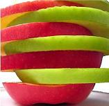
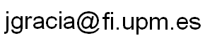

|  | CIDER-CL
A system for monolingual and cross-lingual ontology alignment |
CIDER-CL (Cross-lingual CIDER) [1] grounds on CIDER (Context and Inference baseD ontology alignER). In its current version, cross-lingual capabilities have been added by including the use of Cross-Lingual Explicit Semantic Analysis (CL-ESA) [2] between entities documented in different natural languages. For monolingual comparison we use SoftTFIDF measure [3]. Artificial neural networks are used to combine elementary similarity computations.
CIDER-CL can operate in two modes:
| Prototypes and demos: | CIDER-CL is available for download on Github . The CL-ESA implementation used by CIDER-CL is also available here |
| Experimental evaluation: | CIDER-CL participated in the OAEI'13 evaluation campaign |
| Related publications: | Click here |
| Contact: | Jorge Gracia at  |
[1] J. Gracia, K. Asooja, "Monolingual and Cross-lingual Ontology Matching with CIDER-CL: Evaluation Report for OAEI 2013", Proc. of OM’11 workshop @ISWC’13.
[2] P. Sorg and P. Cimiano. “Exploiting wikipedia for cross-lingual and multilingual information retrieval”. Data Knowl. Eng., 74:26–45, Apr. 2012
[3] W.W. Cohen, P. Ravikumar, and S. E. Fienberg. “A comparison of string distance metrics for name-matching tasks”. In Proc. of IIWeb-03 workshop @ IJCAI’03
Logotype based on a creation by Bert Dennison (with permission).